t_ColorMetamerism
Illustrate a metameric color match.
Simulate a uniform field with D65 spectral power distribution and a matching (metameric) LCD display.
Then use the two metamers to create a bar pattern.
Show how the bar pattern is represented after optical blurring and then captured by the human cone sensor array.
(c) Imageval Consulting, LLC 2012
Contents
- Initialize
- Create a uniform scene with a D65 spectral power distribution
- Create a uniform field with a metameric spectral power distribution.
- Now read the Stockman cone wavelength sensitivities
- Create a new uniform scene with the SPD that is metameric to D65
- Numerical check
- A spatial pattern with two metamers adjacent.
- Compute the OI and show the SPD across a line in the image
- Compute the sensor response for these half degree bars.
- Now, reduce the fov so the bars are an eighth of a degree.
- END
Initialize
ieInit;
Create a uniform scene with a D65 spectral power distribution
uSize = 64;
uS = sceneCreate('uniformd65',uSize);
vcAddAndSelectObject(uS); sceneWindow;
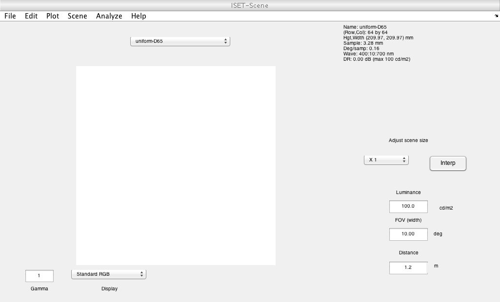 Create a uniform field with a metameric spectral power distribution.
The new spectrum is the weighted sum of the primaries of an LCD. spectrum. The weights are chosen so that the LCD has the same effect as the D65 on the cones.
This new SPD is a cone metameric match to the D65 in the original scene.
% The mean LMS cone values of the original lms = sceneGet(uS,'lms'); meanLMS = mean(RGB2XWFormat(lms)); % Load a display and use the display primaries as a set of basis functions % for the metameric light. d = displayCreate('LCD-Apple'); wave = sceneGet(uS,'wave'); displaySPD = displayGet(d,'spd',wave); % These are the display primaries vcNewGraphWin; plot(wave,displaySPD) title('Display primaries')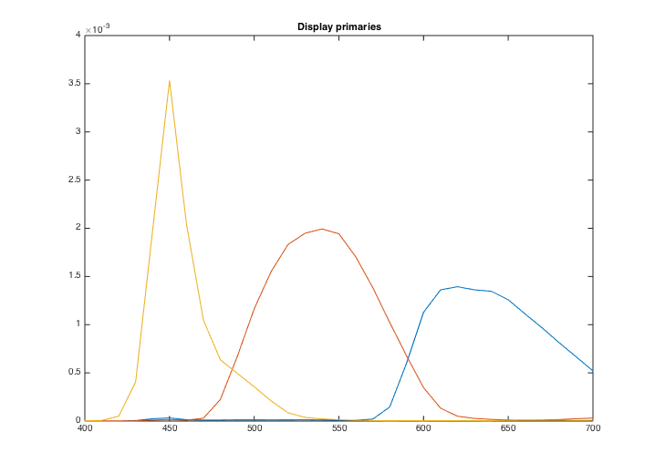
Now read the Stockman cone wavelength sensitivities
S = ieReadSpectra('stockman',wave); dW = wave(2)-wave(1); % Delta Wavelength % Solve for the weights on the primaries that will produce the same % absorptions in the cones as the D65 light. Be careful to account for the % wavelength sample spacing, dW. % % meanLMS(:) = S'*(displaySPD*w)*dW % w = ((S'*displaySPD)\meanLMS(:))/dW; metamer = displaySPD*w;
Create a new uniform scene with the SPD that is metameric to D65
We do this using the sceneSPDScale routine. This multiplies the SPD in the scene by another SPD. We use the metamer/originalSPD as the multiplier.
% Here is the original oSPD = sceneGet(uS,'mean energy spd'); % Divide by the original, and then multiply by the metamer uS2 = sceneSPDScale(uS,metamer(:)./oSPD(:),'*',0); uS2 = sceneSet(uS2,'name','metamer'); % The metamer SPD mSPD = sceneGet(uS2,'mean energy spd'); % Make a plot comparing the metamer and the original mean energy (mn) vcNewGraphWin; plot(wave,mSPD,'-o',wave,oSPD,'--'); legend('Metamer','original') % Note that the color appearance on the screen differs between these two % metamers. That is because I did not implement a rendering algorithm % based on human vision and the cones. I used a method that is faster. I % am thinking of changing because, well, computers are now faster. vcAddAndSelectObject(uS2); sceneWindow;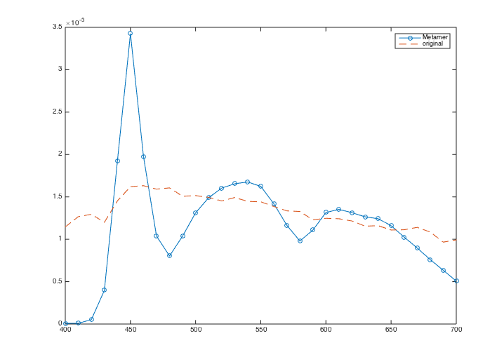 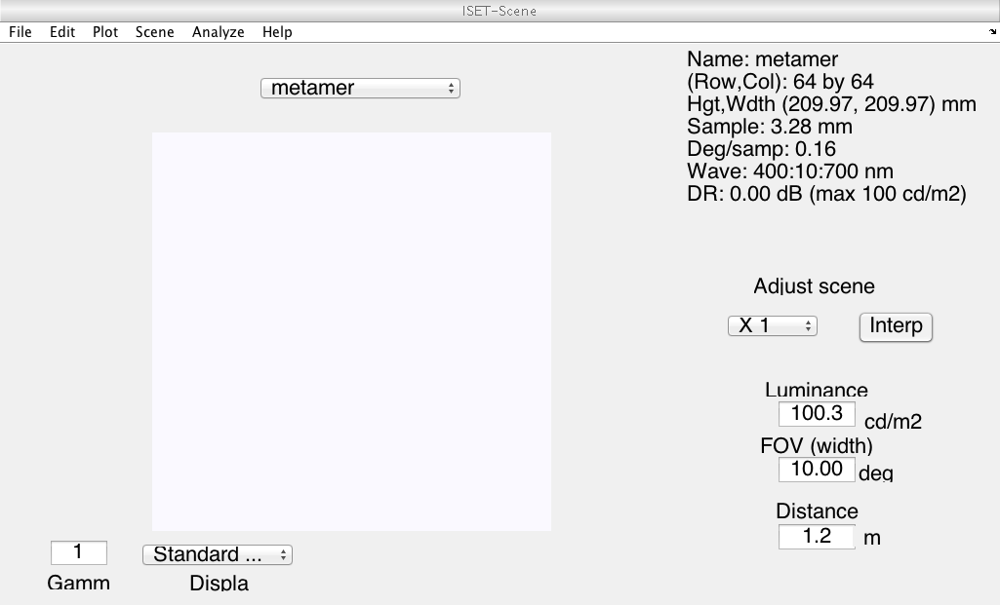
Numerical check
The comparison projects of the SPDs of the metamers onto the Stockman cones. The difference should be zero. It is small, and I am not sure why it is not really zero. I could probably do better.
S'*(mSPD(:) - oSPD(:)) / norm(oSPD,2)
ans =
1.0e-07 *
0.0912
0.0352
-0.3560
A spatial pattern with two metamers adjacent.
This will enable us to see the effect of optical blurring on the different spectral power distributions.
% Retrieve the SPD data from the two different uniform scenes. height = 64; width = 32; xwData = sceneGet(uS,'roi photons', [8 8 width-1 height-1]); xwData2 = sceneGet(uS2,'roi photons',[8 8 width-1 height-1]); % Combine the two data sets into one and attach it to a new scene cBar = XW2RGBFormat([xwData; xwData2],height,2*width); barS = sceneSet(uS,'photons',cBar); % Name it, set the FOV, and show it. barS = sceneSet(barS,'name','bars'); barS = sceneSet(barS,'h fov',1); vcAddAndSelectObject(barS); sceneWindow;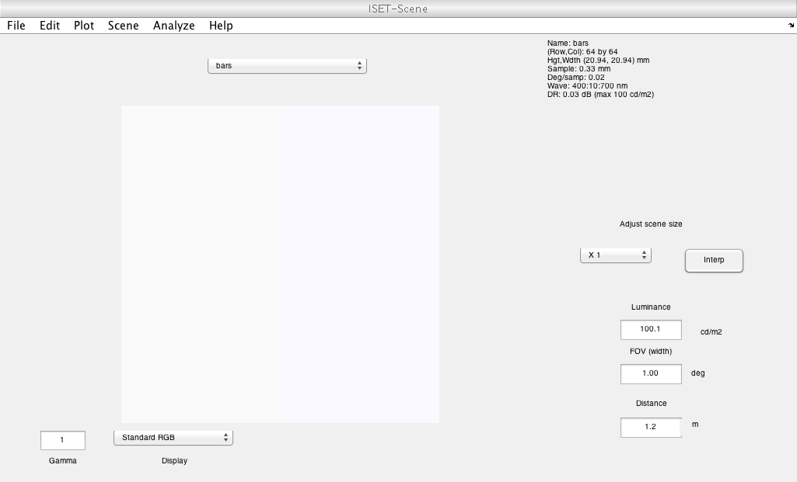
Compute the OI and show the SPD across a line in the image
Notice that the optical image spectral irradiance varies across the row. The LCD spectra are clearly seen at the positive positions. They are blurred a little onto the left side by the optics.
oi = oiCreate('human'); oi = oiCompute(oi,barS); vcNewGraphWin; midRow = round(oiGet(oi,'rows')/2); oiPlot(oi,'h line irradiance',[1,midRow]); title('1 cpd bar'); vcAddAndSelectObject(oi); oiWindow;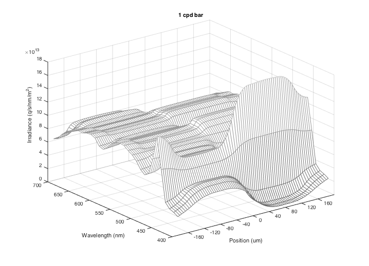 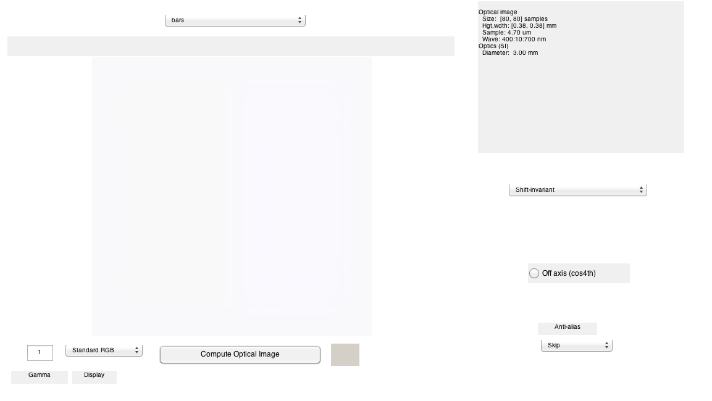
Compute the sensor response for these half degree bars.
Notice that the cone absorptions are fairly constant across the horizontal line at this spatial resolution.
sensor = sensorCreate('human'); sensor = sensorSet(sensor,'exp time',0.10); sensor = sensorSetSizeToFOV(sensor,1,uS,oi); sensor = sensorCompute(sensor,oi); sz = sensorGet(sensor,'size'); sensorPlotLine(sensor,'h','photons','space',[1,sz(1)]); vcAddAndSelectObject(sensor); sensorWindow('scale',1);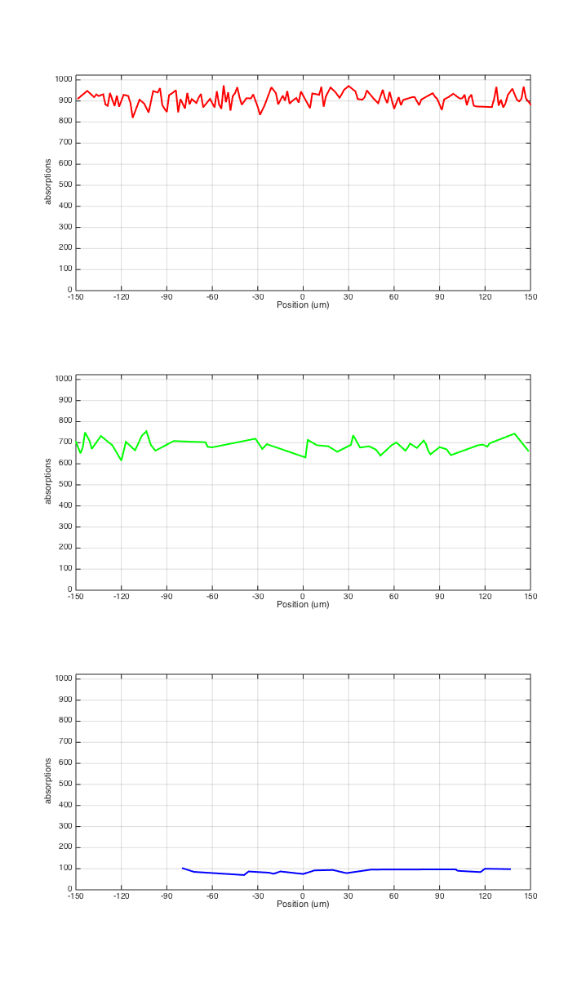 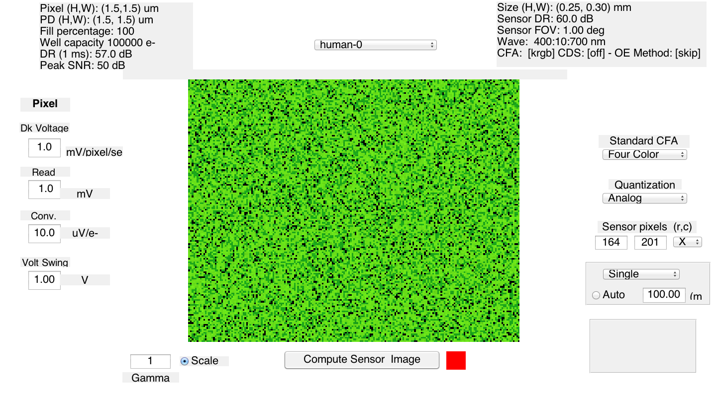
Now, reduce the fov so the bars are an eighth of a degree.
There is structure in thean see this more clearly if we average a few rows. Let's do it. S-cone response, higher on the left and lower on the right. We c
barS = sceneSet(barS,'h fov',1/4); oi = oiCompute(oi,barS); vcAddAndSelectObject(oi); oiWindow; vcNewGraphWin; oiPlot(oi,'h line irradiance',[10,1]); title('4 cpd bar');
 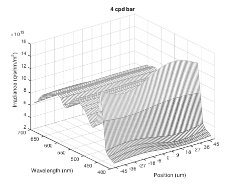
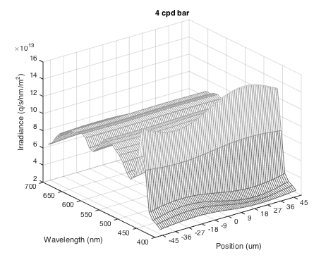